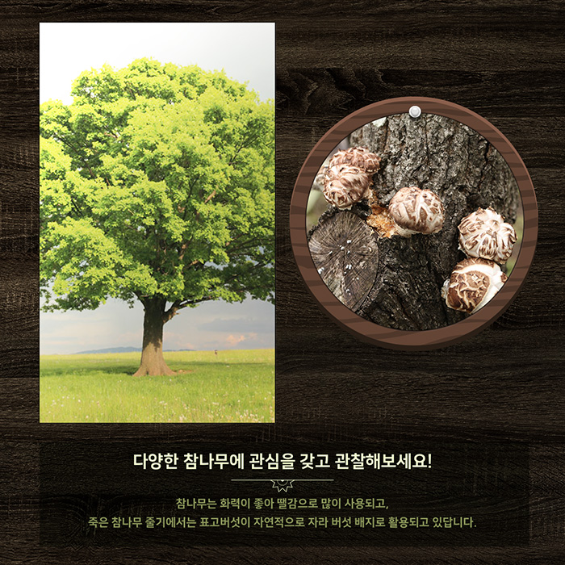
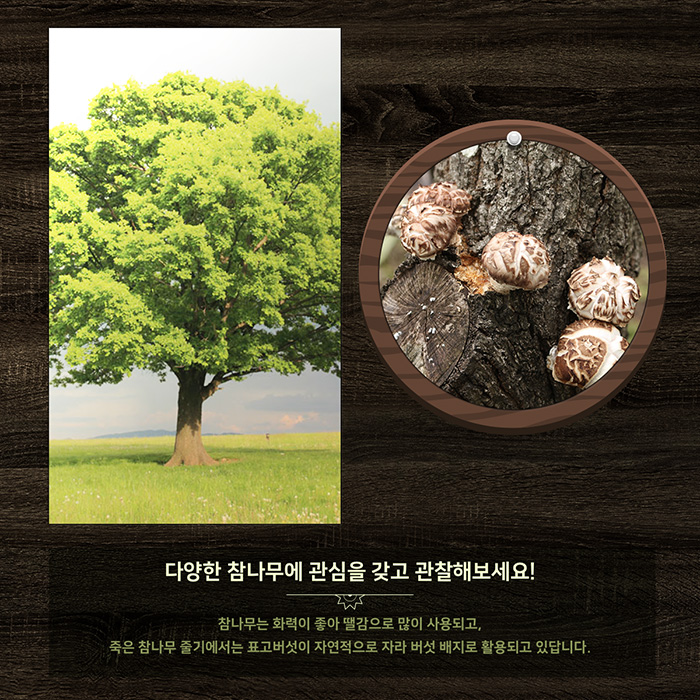

참나무 종류와 이름의 유래
도토리가 나는 나무를 도토리나무라고 하고요. 그 쓰임이 좋아 진짜 나무 ‘참나무’라고 해요.
참나무는 상수리나무, 굴참나무, 신갈나무, 떡갈나무, 갈참나무, 졸참나무 이렇게 6가지 종류로 나뉩니다.
도토리가 많이 열리는 상수리나무
상수리나무의 열매로 만든 도토리묵을 임금님 수라상에 올려서 ‘상수리나무’라고 불렸대요. 상수리 나무의 잎은 길고, 열매는 참나무 중 가장 맛이 좋아요.
코르크 마개 굴참나무
와인병 코르크 마개에 사용되는 굴참나무는, 줄기가 세로로 굵게 갈라진다는 의미로 ‘굴참나무’라고 불려요. 굴참나무의 잎의 뒷면은 흰색이고, 상수리 나뭇잎과 같이 잎이 길고 가늘어요.
짚신 밑창 신갈나무
옛날 짚신 안에 지금의 밑창과 같이 신갈나무의 잎을 깔아서 신어 ‘신갈나무’라고 불리기 시작했어요. 떡갈나무의 잎과 비슷하게 생겼지만, 신갈나무의 잎은 얇습니다.
잎으로 떡을 싼 떡갈나무
옛날에는 떡갈나무의 잎으로 떡을 쌌답니다. 그래서 ‘떡갈나무’라고 불려요.
단풍을 오래 보고 싶다면 갈참나무
갈참나무의 단풍잎은 다른 참나무보다 더 늦게까지 달고 있어요. 그래서 이 나무를 가을 참나무, 갈참나무라고 불러요.
잎이 작은 졸참나무
참나무 중에서 잎과 열매가 가장 작아요. 그래서 졸병이라는 의미로 ‘졸참나무’라고 불렸어요. 잎 뒷면에 털이 많답니다.
다양한 참나무에 관심을 갖고 관찰해보세요!
참나무는 화력이 좋아 땔감으로 많이 사용되고, 죽은 참나무 줄기에서는 표고버섯이 자연적으로 자라 버섯 배지로 활용되고 있답니다.